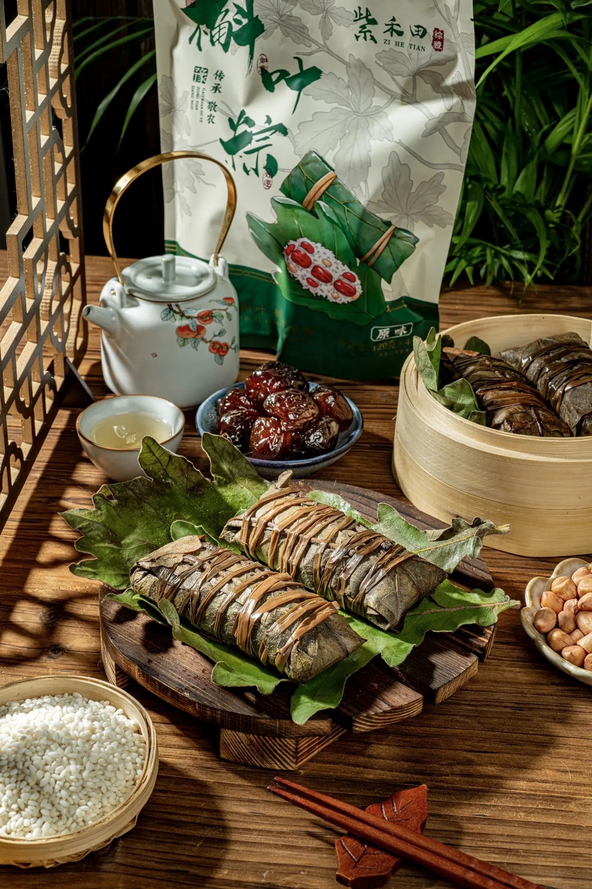
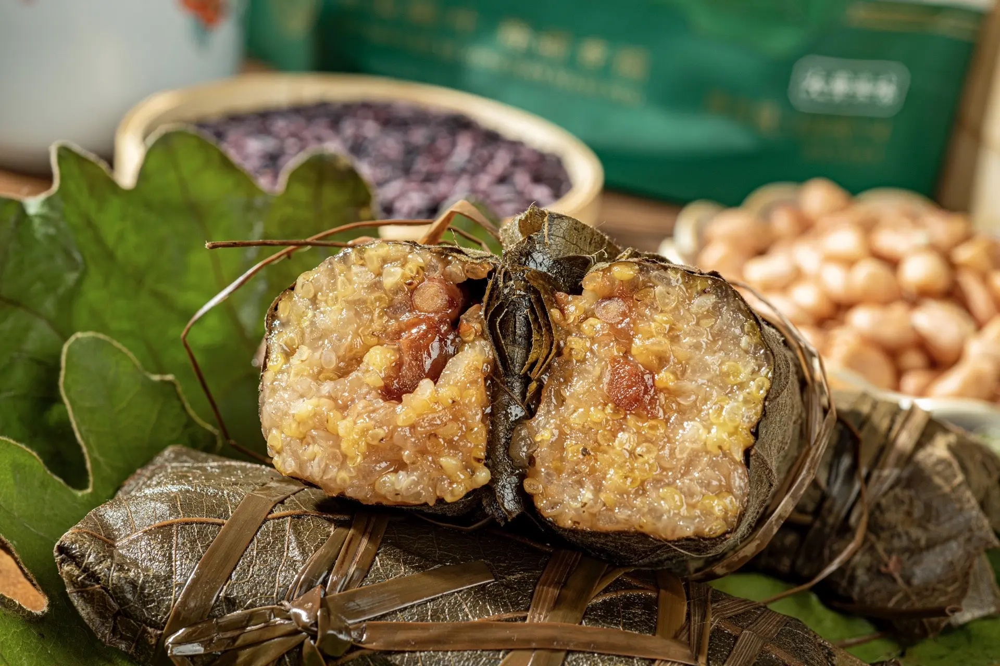
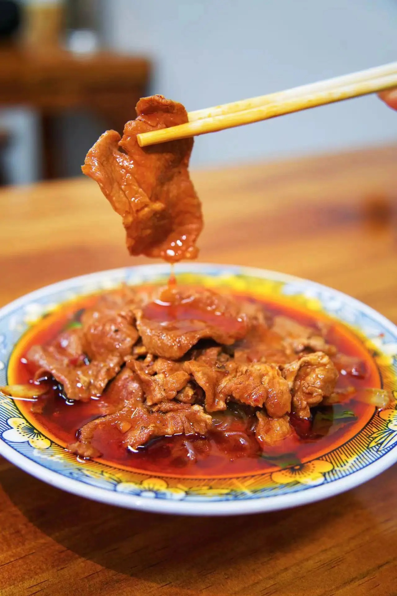
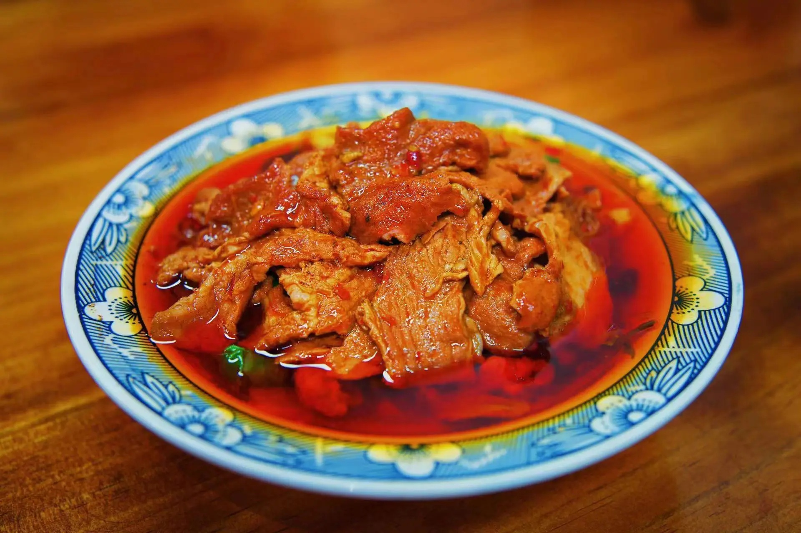

槲坠
鲁山槲坠是河南鲁山特色风味小吃与端午必备美食，以当地深山槲栎叶为包裹材料，这种叶子宽大清香且具防腐性，将浸泡后的糯米、枣、花生、红豆等馅料用槲叶包成长筒状，以龙须草捆扎，经大火、文火长时间烹煮。其出锅后清香扑鼻，入口软甜香糯，不仅是美味的食物，更承载着鲁山的地域特色与民俗文化，因当地缺乏常用粽叶，槲叶便成为独特的包制材料，形成了别具一格的饮食传统。
 揽锅菜
鲁山揽锅菜是河南鲁山极具代表性的传统豫菜，起源于明朝洪武年间，由工部尚书张国玺将多种菜肴烩于一锅得名。以散养黑猪肉、油焖豆腐、本地粉条、时令青菜、山蕨菜等为主料，搭配大茴、肉桂、草果等数十种香料，经独特工艺将食材分别处理后入锅炖煮，使其味道充分交融，成菜香而不腻、麻辣适度、营养丰富，既是鲁山人日常饮食的重要组成，也是待客佳肴，深受大众喜爱。
 鲁山水席
鲁山水席始创于1908年，是鲁山县特色宴席美食。它以“八碗八”宴席为代表，冷拼四荤四素，主菜包含糖醋鲤鱼、清蒸柴鸡等经典菜肴，搭配猴头汤等山珍炖品 ，遵循“一菜一汤、咸甜交替”的独特风格。菜品荤素搭配、汤菜兼具，既展现了鲁山本地丰富的食材特色，又融入了豫菜烹饪技法，冷热、荤素、浓淡巧妙融合，宴席过程中一道道菜品如同流水般依次上桌，极具地方饮食文化特色，是鲁山饮食文化的重要体现，承载着当地的风土人情与待客之道。